第一性原理 · 量子材料 · 多铁性
周颖 Ying Zhou
现任浙江理工大学理学院特聘副教授。博士毕业于东南大学物理学院，师从东南大学物理学院院长、国家杰出青年科学基金获得者董帅教授。
主要从事量子功能材料的理论研究，聚焦磁性、铁电与多铁材料中的新奇物性及调控机制，开展第一性原理计算与理论模拟。
01
第一性原理计算
研究磁性、铁电与多铁材料的微观机制及量子物性。
02
磁电耦合
探索磁电耦合效应、自旋电子学输运及量子态调控。
03
二维多铁材料
研究二维层状钙钛矿中的面外铁电、交错磁序与压磁效应。
04
拓扑磁电效应
研究拓扑保护的逆磁电效应及室温铁磁多铁物性。
🔥 最新动态
- 2026.01：🎉🎉 共同第一作者论文被 Nature Communications 接收！
- 2025.08：🏆🏆 获得吴健雄纪念基金女学人奖（全校 10 人）。
- 2025.07：🎉🎉 获中国材料大会高水平学术墙报奖。
- 2024.12：🚀🚀 入选首批中国科协青年人才托举工程博士生专项计划。
📝 发表论文
14 篇论文
6 篇中科院一区
6 篇中科院二区
2 篇中科院三区
-
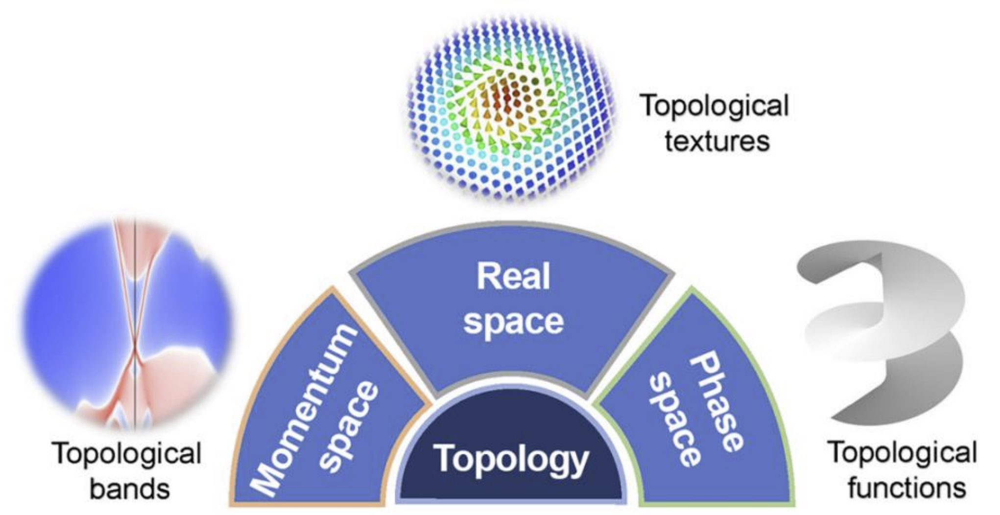
[2026-3]
CAS Q3
磁电拓扑：参数空间中的绳索编织
Y. Zhou（1st）, et al.
Chinese Physics B, 35, 027501 (2026).
-
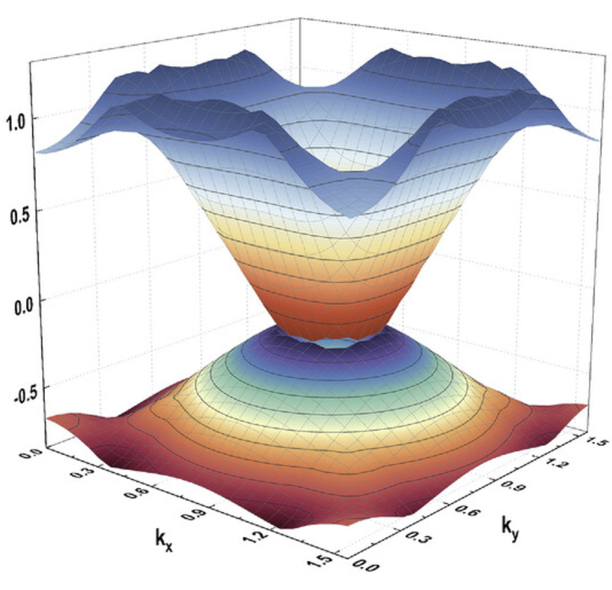
[2026-2]
CAS Q1 · TOP
外延反钙钛矿氮化物中的异常应变弛豫与狄拉克半金属行为
Y. Zhou（4th）, et al.
Advanced Functional Materials, 36, e75034 (2026).
-
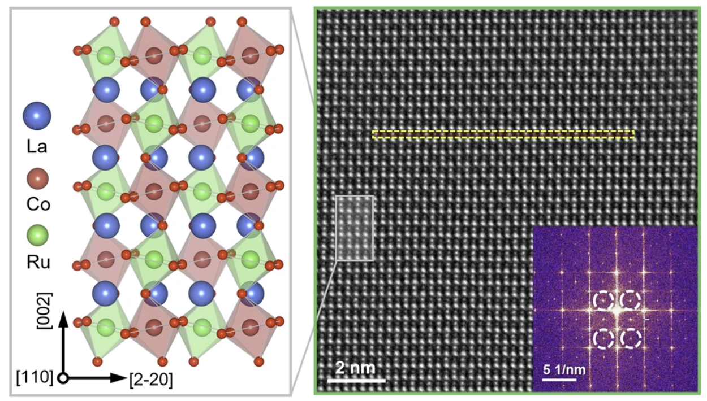
[2026-1]
CAS Q1 · TOP
3d-4d阳离子工程实现应变La2CoRuO6薄膜中的室温亚铁磁性与极性相
Y. Zhou（Co-first）, et al.
Nature Communications, 17, 3887 (2026).
-
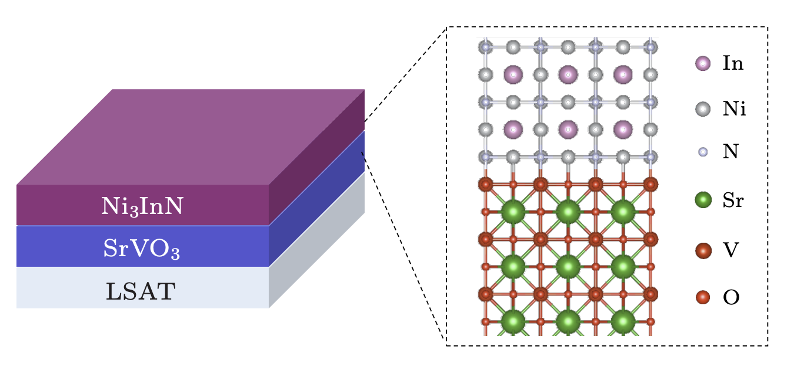
[2025-4]
CAS Q1
Ni3InN/SrVO3异质界面处的电荷转移
Y. Zhou（Co-first）, et al.
Chinese Physics Letters, 42, 100705 (2025).
-
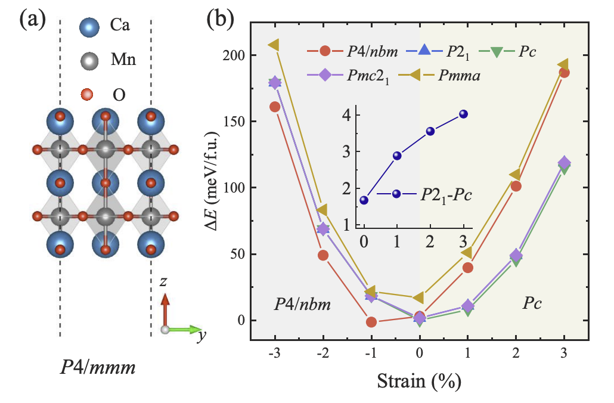
[2025-3]
CAS Q2 · TOP
二维多铁材料中的面外铁电性、磁电耦合与持久自旋纹理
Y. Zhou（1st）, et al.
Physical Review B, 112, 054412 (2025).
-
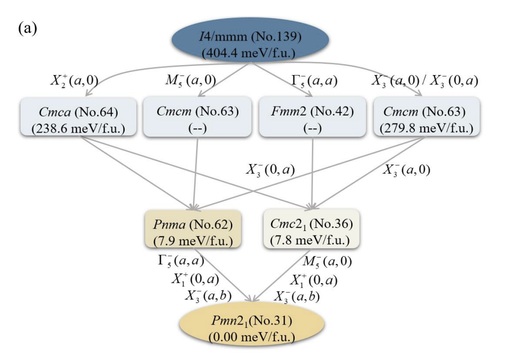
[2025-2]
CAS Q2 · TOP
交变磁多铁K3Cr2F7中压磁驱动的磁电耦合
Y. Zhou（1st）, et al.
Physical Review B, 112, 094412 (2025).
-
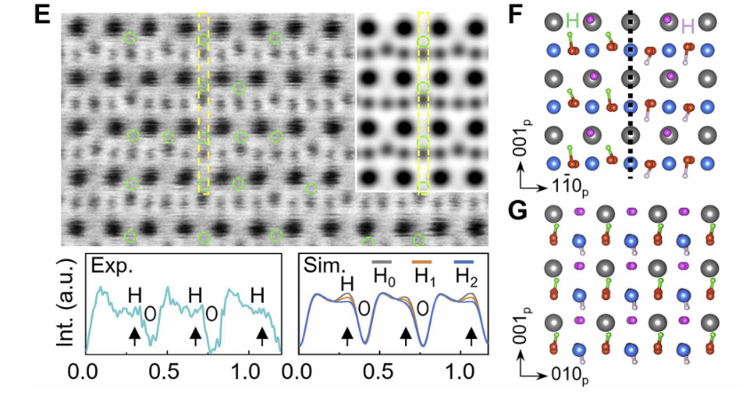
[2025-1]
CAS Q1 · TOP
N-H共注入钙钛矿锰氧化物中具有多重可翻转极化态的准二维铁电性
Y. Zhou（6th）, et al.
Science Advances, 11, eadx3747 (2025).
-
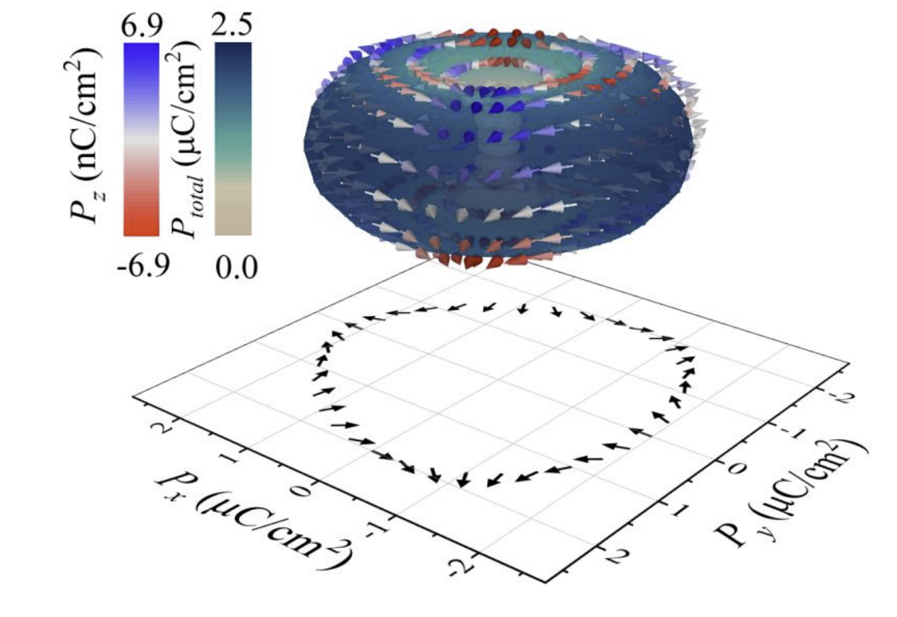
[2024-2]
CAS Q3
室温铁磁体OsX2单层中创纪录的磁致极化
Y. Zhou（1st）, et al.
Physical Review Materials, 8, 104403 (2024).
-
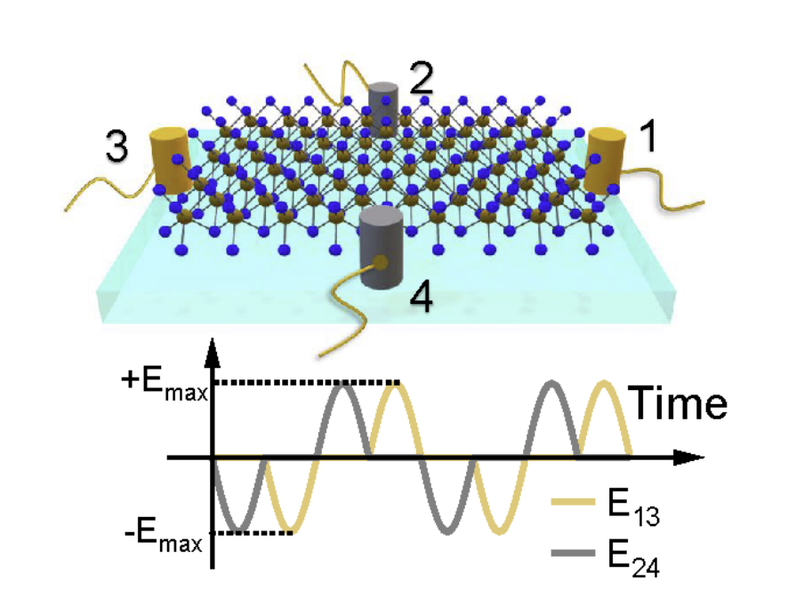
[2024-1]
CAS Q2 · TOP
双叶黎曼面拓扑逆磁电效应
Y. Zhou（1st）, et al.
Physical Review B, 110, 054424 (2024).
-
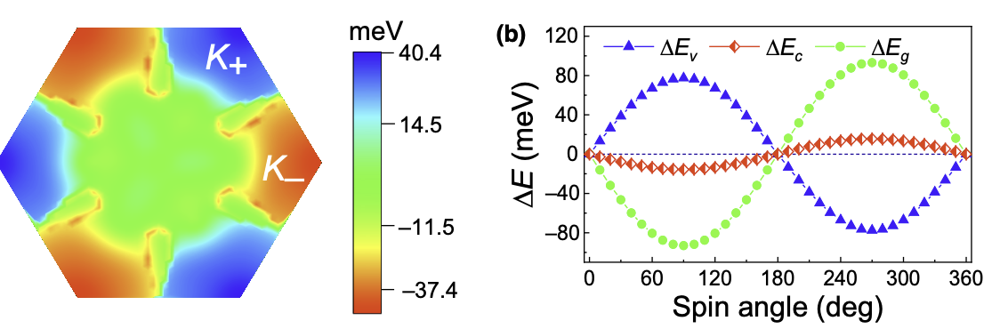
[2023-2]
CAS Q2 · TOP
二维铁磁体中的磁电耦合与交叉调控
Y. Zhou（Co-first）, et al.
Physical Review Applied, 20, 064011 (2023).
-
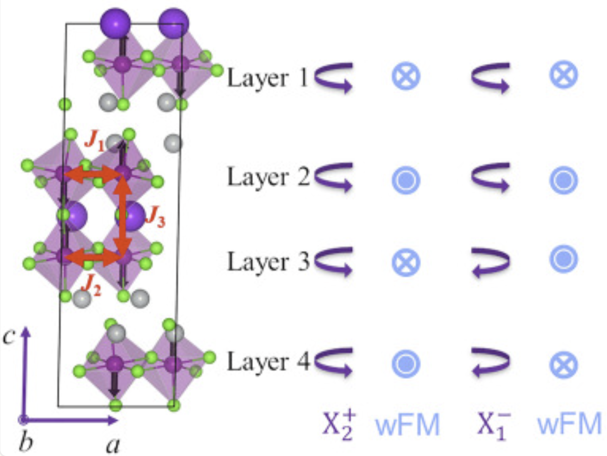
[2023-1]
CAS Q1 · TOP
准二维材料中的面外铁电性与鲁棒磁电效应
Y. Zhou（3rd）, et al.
Science Advances, 9, 47 (2023).
-
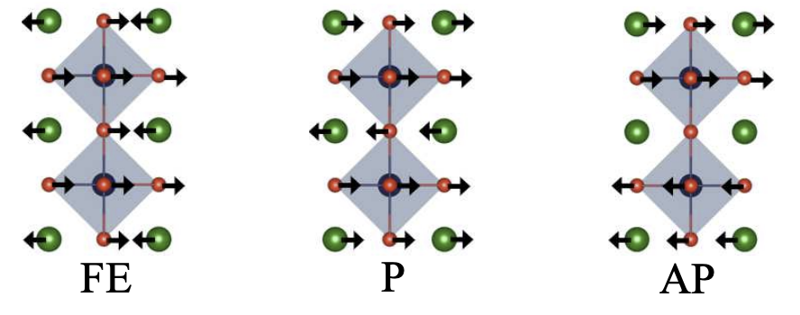
[2022-2]
CAS Q2 · TOP
钙钛矿氧化物中八面体旋转畸变诱导的二维铁电性
Y. Zhou（1st）, et al.
Physical Review B, 105, 075408 (2022).
-
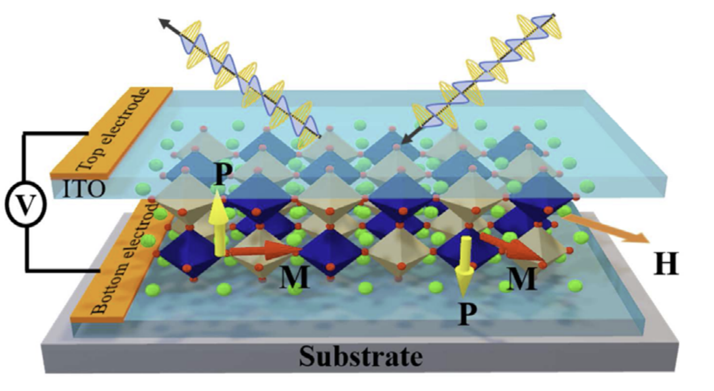
[2022-1]
CAS Q1 · TOP
钙钛矿中自旋诱导铁电性与铁磁性的共存与耦合
Y. Zhou（Co-first）, et al.
Physical Review Letters, 129, 117603 (2022).
（封面文章）
-
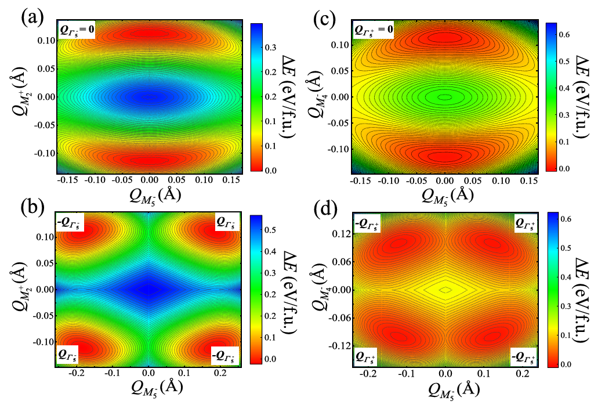
[2021-1]
CAS Q2 · TOP
二维钙钛矿氧化物中的杂化非本征铁电性与磁电耦合
Y. Zhou（1st）, et al.
Physical Review B, 103, 224409 (2021).
🔬 主要研究经历
2024–2025
二维层状钙钛矿中的面外铁电、交错磁序与压磁效应
利用外延应变稳定二维 Ruddlesden–Popper 相钙钛矿的面外铁电性，发现铁电翻转可切换持久自旋纹理，并揭示应变驱动的 Jahn–Teller 压磁效应与磁电耦合机制。
2022–2024
二维磁性材料的拓扑逆磁电效应与室温多铁性
在二维 GdI2 中发现拓扑保护的逆磁电效应，并预言二维 5d 卤化物 OsX2 单层具有室温铁磁性和超大磁致极化。
2021–2022
二维双钙钛矿中自旋诱导铁电性与铁磁性的共存与耦合
实现自旋诱导的面外铁电性与铁磁性在室温以上的共存与耦合，并通过自旋依赖的 p–d 杂化机制揭示其微观起源。
2019–2021
二维钙钛矿中八面体旋转诱导的杂化非本征铁电性
揭示八面体旋转与倾斜对晶格动力学和极化翻转的调控规律，建立应变与界面效应控制铁电性及磁电耦合路径的物理图像。
主要合作研究经历
2024–2025
应变诱导 3d–4d 双钙钛矿中室温亚铁磁与极性相共存
通过第一性原理计算揭示压应变增强 Co–O–Ru 超交换并驱动磁相转变的微观机制，阐明氧八面体梯度旋转破坏滑移面对称性并稳定可翻转极性相的物理起源。
2024–2025
氮化物/氧化物异质界面电荷转移与磁性调控
揭示 Ni3InN/SrVO3 界面的电荷转移机制及层分辨磁矩形成规律，并预言异质界面可诱导非共线磁性。
🎤 参加学术会议与荣誉
- 美国磁学年会 · 口头报告佛罗里达
- 中国材料大会 · 高水平学术墙报奖厦门
- 第二十届全国电介质物理、材料与应用学术会议 · 口头报告成都
- 中国材料大会 · 优秀青年学术墙报奖广州
- 中国物理学会 · 海报报告海南
- 第十九届全国电介质物理、材料与应用学术会议 · 优秀口头报告奖南京
- 江苏省研究生前沿物理与交叉科学学术创新论坛 · 口头报告一等奖线上
🎖 荣誉与主持项目
荣誉奖励
- 2025 吴健雄纪念基金女学人奖（全校 10 人）
- 2025 高水平学术墙报奖，中国材料大会，厦门
- 2024 优秀青年学术墙报奖，中国材料大会，广州
- 2023 优秀口头报告奖，第十九届全国电介质物理、材料与应用学术会议，南京
- 2022 口头报告一等奖，江苏省研究生前沿物理与交叉科学学术创新论坛
主持项目
- 2024 主持，首批中国科协青年人才托举工程博士生专项计划（青托）
- 2025 主持，东南大学博士研究生创新能力提升计划项目 C 类“磁电材料参数空间拓扑行为”
- 2021 主持，江苏省研究生科研创新计划项目“基于钙钛矿结构的二维多铁性材料的理论设计”（省创）
💼 工作与社会实践
工作经历
学术服务与社会实践
- 2024 分会秘书，中国材料大会多铁分会
- 2023 主办方学生后勤主管，第十九届全国电介质物理、材料与应用学术会议
- 2023 大学物理助教，东南大学物理学院
🛠 专业技能
- 熟练使用 VASP、ABINIT、WANNIER90、BoltzTraP2 等第一性原理计算及后处理软件。
- 具备良好的英文阅读与写作能力。